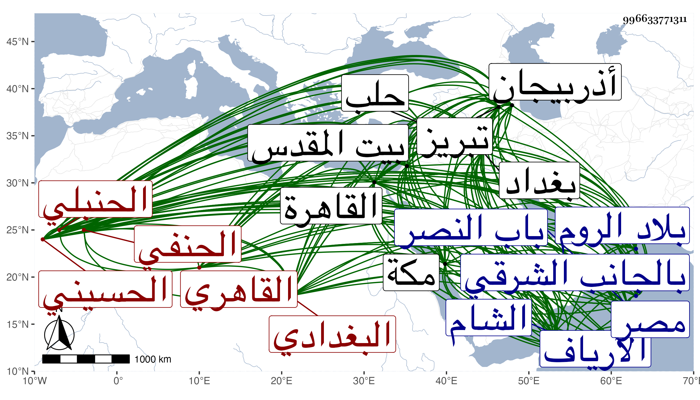

0902Sakhawi.DawLamic.ITO20230111-ara1.EIS1600.996633771311
Biography ID: 996633771311
512
عبد السلام بن أحمد بن عبد المنعم بن أحمد بن محمد بن كيدوم بن عمر بن أبي الخير سعيد العز المجد أبو محمد بن الشهاب أبي العباس بن الشرف الحسيني القيلوي الأصل بفتح القاف ثم تحتانية ساكنة نسبة لقرية ببغداد يقال لها قيلويه كنفطويه البغدادي ثم القاهري الحنبلي ثم الحنفي . ولد تقريبا بعد السبعين وسبعمائة قال مرة بخمس وأخرى بست بالجانب الشرقي من بغداد ونشأ بها فقرأ القرآن لعاصم وحفظ كتبا جمة في فنون كثيرة سيأتي تعيين ما تيسر منها وبحث في غالب العلوم على مشايخ بغداد والعجم والروم حتى أنه بحث في مذهبي الشافعي وأحمد وبرع فيهما وصار يقرىء كتبهما ولازم الرحلة في العلم إلى أن صار أحد أركانه وأدمن الاشتغال والاشغال بحيث بقي أوحد زمانه ، ومن شيوخه في فقه الحنفية الضياء محمد الهروي أخذ عنه المجمع بعد أن حفظه ولازمه بالسلطانية من عمل أذربيجان وسمع غالب الهداية بحثا على عبد الرحمن التشلاقي أو القشلاغي بالقاف والشين والغين المعجمتين خال العلاء البخاري وشارح البيضاوي الشرح الموصوف بالحسن وسمع عليه أصول الحنفية بحثا وفي فقه الحنابلة محمد بن الحادي وسمع عليه البخاري وعبد الله بن عزيز بزايين معجمتين مع التصغير والتثقيل ومحمود المعروف بكريكر بالتصغير ومحمد الكيلاني ، وتزايد اشتغاله بهذا المذهب لكون والده كان حنبليا وفي فقه الشافعية مولانا حجة تلك البلاد بل يقال إنه من أولاد ابنه صاحب الحاوي وناصر الدين محمد المعروف بأيادي الأبهري ولازمه مدة طويلة أخذ عنه فيها النحو والصرف ، ولم يتيسر له البحث في فقه المالكية وقصد ذلك فما قدر وأخذ أصول الدين وآداب البحث عن السراج الزنجاني وأصول الفقه عن أحمد الدواليبي أخي محمد وحضر بحث المختصر الأصلي لابن الحاجب والعضد وكثيرا من شروح التلخيص في المعاني وكثيرا من الكشاف على مولانا ميرك الصيرامي أحد تلامذة التفتازاني وبحث بعض الكشاف أيضا والمعاني والبيان على مولانا عبد الرحمن ابن أخت أحمد الجندي وجميع الشاطبية بعد حفظها على الشريف محمد القمني والنحو عن أحمد بن المقداد وعبد القادر الواسطي وبحث عليه الأشنيهية في الفرائض بخلوة الغزالي من المدرسة النظامية ببغداد وانتفع به في غير ذلك والطب والمعاني والبيان أيضا بعد حفظه للتلخيص عن المجد محمد المشيرقي السلطاني الشافعي والمنطق بعد حفظه الشمسية عن القاضي غياث الدين محمد الخراساني الشافعي وكذا بحث عليه علم الجدل أيضا والطب عن موفق الدين الهمذاني وسمع بحث شرح الهداية في الحكمة لمولانا زاده بعد حفظه متنها على المجد محمد التوريزي وغير ذلك من كتب الطب وسمع على مولانا موسى باشا الرومي علم الموسيقى بحثا وكان لقيه لأكثر من أشير إليه بالسلطانية لكون تمر جمعهم بها وهي محل حريمه وأجرى عليهم الأعطية وارتحل إلى تبريز فأخذ بها عن الضياء التبريزي النحو وأصول الفقه وعن الجلال محمد القلندشي فقه الشافعية وأصولهم وحضر المعاني والبيان وبعض الكشاف عند مولانا حيدر ، ثم إلى أرزنجان من بلاد الروم فأخذ علم التصوف عن يارغلي السيواسي ثم عاد من بلاد الروم بعد أن جال الآفاق وأسر مع اللنك وقاسى شدة بحيث كانوا يقطعون الرءوس ويحملونه إياها إلى البلاد الشامية في سنة عشر وثمانمائة مجردا عليه كنبك فلقي بحلب من شاء الله من العلماء ، وناظر في الشام الجمال الطيماني واجتمع في القدس بالشهاب بن الهائم فعظمه كثيرا وزاد إذ ذاك الخليل عليه السلام وبعد القاهرة بعد هذا كله في مستهل رجب منها وقد أشير إليه في الصرف والنحو والمعاني والبيان والمنطق والجدل وآداب البحث والأصلين والطب والعروض والفقه والتفسير والقراءات والتصوف وغيرها فنزل بالجمالية وقرر في صوفيتها وأقبل الناس عليه فأخذوا عنه ، وزوجه الشيخ مصطفى المقصاتي ابنته وتدرب به في عمل المقصات وتكسب بها وقتا مع اشتهاره بالفضيلة التامة حتى أنه لما تمت عمارة الجامع المؤيدي وحضر السلطان عند مدرسيه ومنهم البدر الأقصرائي الحنفي كان من جملة الحاضرين فلم يتكلم معه غيره بحيث عظم في عين السلطان وأشار لما تم الدرس ورام المدرس الدعاء بنفسه مبالغة في تعظيم السلطان لصاحب الترجمة أن يفعل ففعل وأعلمه البدر بن مزهر وذلك قبل أن يلي كتابة السر بأنه رجل عالم يتكسب بعمل المقصات فوعد ببناء مدرسة من أجله يكون هو شيخها فما تيسر وربما أقرأ ولده إبراهيم بل رام المؤيد الاجتماع به في محل خلوة للقراءة عليه فما وافق العز خوفا من الصاق كثير مما يصدر عن السلطان به وعد ذلك من وفور عقله ، واستمر العز ملازما للاشغال غير مفتقر للاستفادة من أحد إلا في علم الحديث دراية ورواية فإنه أخذ علوم الحديث جميعا لابن الصلاح عن الولي العراقي بعد قراءته وسائره سماعا وكان البحث فيه إلى أثناء النوع الحادي والأربعين وباقيه سردا ولازمه حتى أخذ عنه نظهر الاقتراح لوالده بحثا وسمع عليه من تصانيف أبيه تقريب الأسانيد والمنظومة في غريب القرآن ومن أول السيرة الألفية إلى ذكر أزواجه والكثير من النكت على ابن الصلاح وقرأ منها جميع الألفية الحديثية رواية والمورد الهني ومن غيرها الكثير من الأصول الكبار وغيرها ووصفه في إثبات بعضه بخطه بالشيخ الإمام العالم العامل مفيد الطالبين نفع الله به ومرة بالشيخ العالم الفاضل المفنن ذي الفوائد والفرائد مفيد الطالبين أمتع الله بفوائده وأجراه على جميل عوائده ، ومرة بالشيخ الإمام العالم ، وأذن له في إقراء علوم الحديث وإفادته وكذا قرأ على شيخنا صحيح البخاري والنخبة له واختص به كثيرا وكان أحد الطلبة العشرة عنده بالجمالية وحضر دروسه وأماليه ، ورأيت بخط شيخنا بتصنيفه النخبة كتبها برسمه قال في آخرها ما صورته علقها مختصرها تذكرة للعلامة مجد الدين عبد السلام نفع الله به آمين وتمت في صبيحة الاربعاء ثاني عشر شوال سنة أربع عشرة ، وقال في أولها ما نصه : رواية صاحبها العلامة الأوحد المفنن مجد الدين عبد السلام البغدادي وكتب له عليها أنه قرأها قراءة بحث وإتقان وتقرير وبيان فأفاد أضعاف ما استفاد وحقق ودقق ما أراد وبنى بيت المجد لفكره الصحيح وأشاد ثم قال وأذنت له أن يقرئها لمن يرى ويرويها لمن درى والله يسلمه حضرا وسفرا ويجمع له الخيرات زمرا ، وسمعته يقول مرارا لم أستفد بالقاهرة من غيرهما لكن قد ذكر لي بعض من أخذت عنه أنه أخذ الطب وغيره عن إسماعيل الرومي نزيل البيبرسية وأحد صوفيتها الذي كان يقال له كردنكش فلعله لم ير عنده ما يستحق أن يسميه بالنسبة لمعرفته فائدة والله أعلم وأما الرواية فانه سمع وقرأ على غير واحد وطلبها بنفسه فأكثر وكتب الطباق وضبط الناس ورافق المتميزين فيها ، ومن شيوخه الذين أخذ عنهم الزين أبو بكر المراغي وكان سماعه عليه بمكة حيث حج كما كتبه لي بخطه والشرف بن الكويك والجمال عبد الله الحنبلي والشموس المحمدون البرماوي والشامي الحنبلي والزراتيتي وابن المصري وابن البيطار والغرس خليل بن سعيد القرشي والتقي الزبيري والفخر الدنديلي والشهابان الطريني والبطائحي والنوران الفوي والابياري والسراج قاري الهداية ، وأجاز له من الحرمين الجمال بن ظهيرة والزين الطبري والوانوغي وعبد الرحمن الزرندي ورقية ابنة ابن مزروع وآخرون بل سمع على جماعة فيهما ، وقرره الزيني عبد الباسط متصدرا بمدرسته وفصل له ثيابا نفيسة وسكنها بعد الجمالية وقتا ثم انتقل منها إلى التربة الدوادارية وكان قد ولي مشيختها ونظرها بعد منازعة النور السويفي أمام السلطان له في ذلك ودفع السلطان لامامه بقوله أعطه استيفاء الصحبة يعني التي كانت معه ونحن نعطيك المشيخة وأنا أعين من يشد الاستيفاء عنه نيابة فسكت خوفا من ابرام ذلك ، واستمر مقيما بها إلى أن رغب عنها وانتقل حينئذ إلى الحسينية فسكن في درب الاقباعيين بالقرب من حوض الصارم وانتفع به الناس في كل الأماكن المشار إليها وكذا أعاد بالجانبكية التي بالقربيين للحنفية ثم رغب عنها للنور الصوفي أحد نواب الحنفية الآن وتوقف الناظر في الامضاء له مدة ثم كتب ودرس أيضا الفقه بالمنكوتمرية وبدرس صرغتمش الذي عمله بجامع المارداني برغبة المحبي الاقصرائي ، ثم رغب هو عنه للعضدي الصيرامي ، واستقر الامشاطي بعده في المنكوتمرية وتصدير الباسطية ، إلى غير ذلك من الوظائف التي دونها ، وناب عن ولد السراج قارىء الهداية عقب موت والده فيما أضيف إليه من جهاته كما ذكره شيخنا في ترجمة السراج من إنبائه وهي تدريس الناصرية والاشرفية القديمة والاقبغاوية بجوار الازهر والاعادة بطولون واتفقت وفاة الولد والعز غائب فانتهز القاضي علم الدين وهو إذ ذاك المتولي الفرصة لفضه منه وأعطى الناصرية لابن الزين التفهني والاشرفية والاقبغاوية لآخر والاعادة للشهاب بن المحب بن الاشقر فلما عاد العز وعلم بذلك صاح واستغاث وصرح بأنه لا بد من شكوى القاضي إلى السلطان وصعد القلعة فوجد القاضي أيضا صاعدا لأجل سماع الحديث عند السلطان فقال له القاضي بلغني أنك تريد شكواى فقال له نعم قال ما تقول قال أقول هذا كتاب الحاوي وأشار إليه وهو في كمه أسأل من السلطان فتح أي مكان شاء منه ونقرر أنا وأنت منه ليظهر الاستحقاق ، وقدر اجتماعهما ووقوفه إلى السلطان فأمره بعودها إليه ففعل وتوقف ابن الأشقر في ترك ولده جميع الاعادة فاشترك معه فيها فيما قيل ، وباشر التداريس الثلاثة إلى أن رغب عنها للسيف بن الخوندار ولم يبق معه سوى التصدير بالباسطية والمنكوتمرية ، وممن قرأ عليه من شيوخنا الزين رضوان وابن خضر وابن سالم والتقي المنوفي القاضي والشرف بن الخشاب والتقي الحصني من الشافعية وابن الهمام والتقي الشمني وغيرهما من الحنفية والقرافي والأبدي وغيرهما من المالكية والعز الكناني والبدر البغدادي وابن الرزاز وغيرهم من الحنابلة بل قرأ عليه طبقة أعلى من هذه كالكمال الشمني والشهاب الكلوتاتي وأوحد الدين عبد اللطيف بن الشحنة ودونها كالزين قاسم الحنفي والبدر والولي البلقينيين ومن شاء الله ممن يلي هؤلاء أيضا حتى أنه ألحق الأولاد بالآباء وصار غالب فضلاء الديار المصرية من تلامذته كل ذلك مع الخير والديانة والأمانة والزهد والعفة وحب الخمول والتقشف في مسكنه وملبسه ومأكله والانعزال عن بني الدنيا والشهامة عليهم وعدم مداهنتهم والتواضع مع الفقراء والفتوة والاطعام وكرم النفس والرياضة الزائدة والصبر على الاشتغال واحتمال جفاء الطلبة والتصدي لهم طول النهار والتقنع بزراعات يزرعها في الأرياف ومقاساة أمر المزارعين واتعابهم والاكثار من تأمل معاني كتاب الله عز وجل وتدبره مع كونه لم يستظهر جميعه ويعتذر عن ذلك بكونه لا يحب قراءته بدون تأمل وتدبر والمحاسن الجمة بحيث سمعت عن بعض علماء العصر أنه قال لم نعلم قدم مصر في هذه الأزمان مثله ولقد تجملت هي وأهلها به وبلغني أنه كان ربما جاءه الصغير لتصحيح لوحه ونحوه من الفقراء المبتدئين لقراءة درسه وعنده من يقرأ من الرؤساء فيأمرهم بقطع قراءتهم حتى ينتهي تصحيح ذاك الصغير أو قراءة ذاك الفقير لدرسه ويقول أرجو بذلك القربة وترغيبهم وأن اندرج في الربانيين ولا يعكس ، ولم يحصل له انصاف من رؤساء الزمان في أمر الدنيا ولا أعطى وظيفة مناسبة لعلي مقامه وكان فصيح اللسان مفوها طلق العبارة قوي الحافظة سريع النظم جدا ولذلك فيه مالا يناسب مقامه خصوصا وهو لم يعطه كليته مع إكثاره منه لا يهاب كبير أحد وله مع القاضي علم الدين سوى ما تقدم مفاوضات منها ان القاضي تناقضت فتياه في واقعة واحدة وكان العز قد كتب عليها واتفق اجتماعهما بالقلعة في مجلس السلطان فقال العز لقاضي مذهبه يا مولانا قاضي القضاة ما الحكم عندنا في المفتي الماجن فأجابه بقوله يحجر عليه في فتياه فكانت هذه قاصمة وامتدح شيخنا بما أثبته في الجواهر وأثابه في وقت بعدد أبياته ذهبا وكذا امتدح غيره من الأعيان حتى أنه امتدح الظاهر جقمق بقصيدة عرض فيها بتهدم منزله فأرسل له بأربعمائة دينار ، ومن جملة أبياتها :
| والسقف خر ترابا من ركاكته | والجدر مال أعاليها إلى الطرق |
وأجاب ابن العليف الشاعر عن لغز وقرضه له شيخنا ، وخمس القصيدة المنسوبة لامامنا الشافعي التي أولها :
| خبت نار نفسي باشتعال مفارقي | وأظلم عيشي إذ أضاء شبابها |
وكذا خمس قول الشيخ عبد القادر الكيلاني ما في المناهل منهل يستعذب كما أثبت ذلك في ترجمته من معجمي بل بلغني أنه شرع في جمعه في ديوان على حروف المعجم وكتب منه قطعة ، إلى غير ذلك من التآليف والتعاليق التي كان يمليها على الطلبة ومن ذلك على ايساغوجي والشمسية والالفية والتوضيح واعتذر عن عدم الاكثار من التصانيف والتصدي لها بأنه ليس من عدة الموت لعدم الاخلاص فيه أو كما قال ، وقد أقرأ الحاوي في فقه الشافعية بالقاهرة وأفتى مرة بقول الرافعي مع مخالفة النووي وبلغ ذلك الجلال المحلي فقال ما للناس بمذاهب الناس واتفق علمه بذلك فشاط ، وكان يقرىء تائية ابن الفارض ويترنم بقصائده ويقصد بالفتاوي في النوازل الكبار ودونها وأفتى بأن حمل طالب الحق غريمه المدافع المتمرد عن إعطاء ما وجب عليه إلى الولاة الحماة لا سيما في زماننا جائز ولا لوم على فاعله المحكوم عليه بأنه لا يطالبه إلا من الشرع ، وقد حدث باليسير أخذ عنه أصحابنا وممن قرأ عليه التقي القلقشندي والبقاعي وغيرهما من الطلبة وكنت ممن أخذ عنه في العربية وغيرها وحملت عنه أشياء وكتب لي خطه بسيدنا ومولانا الامام العالم الفاضل المحدث المفيد الشيخ فلان ، وبعد ذلك بسيدنا ومولانا الامام العالم المحدث البارع الحافظ الضابط الثقة المتقن وقال في بعض ما قرأته قراءة متقن ضابط معرب حافظ يقظ مطرب شوق بها الأذهان وشنف بها الآذان كان الله له حيث كان ، وكتب لي نسبه بخطه بعد أن ثبت في سنة أربع وثلاثين على تلميذه التقي المنوفي ضمن ثبوت نسب ابن أخيه لأمه ، ولم يزل على طريقته متصديا لنشر العلم حتى مات في ليلة الاثنين خامس عشري رمضان سنة تسع وخمسين ، وصلى عليه من الغد بمصلى باب النصر ، ودفن بتربة الأمير بورى خارج باب الوزير تحت التنكزية ، ولم يخلف بعده في مجموعه مثله رحمه الله وإيانا .
